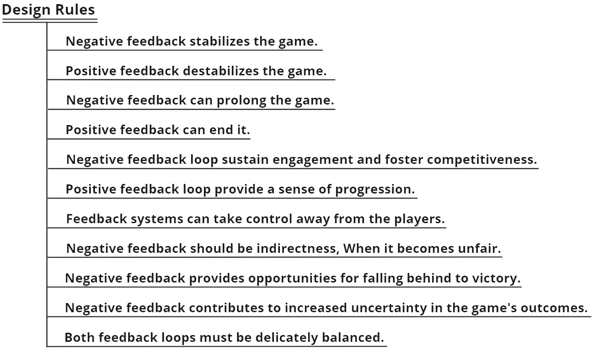
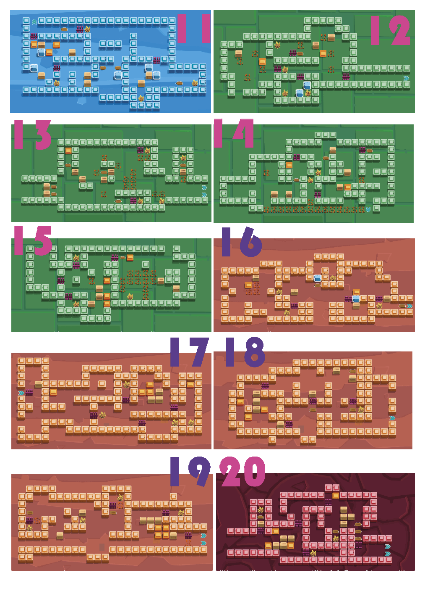

★ Selected · London Games Festival 2024
Interstellar Adventure
RPG Sokoban game: collect crystals to repair your damaged spaceship and embark on a journey home.
How to Play
About
Interstellar Adventure is an RPG Sokoban developed as my Final Major Project at UAL MA Game Design. Players step into the role of Jack, an interstellar traveller stranded on an unknown planet after a meteor storm. To escape, Jack collects energy crystals across 24 levels and uses them to repair four shattered spaceship panels — each panel restoring a different skill.
The game pairs traditional box-pushing with four unlockable abilities (Break Ice, Thorn Phase, Pull Box, Teleport) and an explicit positive/negative feedback-loop system that adapts challenge to player performance. The 24 levels split into a 7-level tutorial, 16 skill-focused levels (four per ability), and a final escape stage.
I led the core gameplay loop, all 24 level layouts, the difficulty progression, and the narrative scaffolding that ties the systems to the story. Co-developed with Ziwei Su (programming) and Dixuan Xu (2D art).
Design Highlights

- Paired positive + negative feedback loops keep the late game challenging — skills can compress a puzzle from ~95 moves to ~43 (Level 11, Break Ice), but an offsetting negative loop forces players to surrender skills as they progress — neutralising the snowball of positive feedback before it trivialises the endgame.
- The negative loop IS the win condition, not a penalty — each surrendered skill maps narratively to a repaired panel fragment, the exact goal Jack is chasing. Losing power feels like progress, not loss; mechanic and story pull the same direction.
- Suggested skill-submission order with built-in escape hatches — level sequencing and background colours nudge the optimal order (Ice → Thorn → Pull → Teleport), but later levels are seeded with redundant skill opportunities. Players who diverge from the canonical order still get a 'this skill matters' moment instead of softlocking.
Level Screenshots



Gameplay Walkthrough
Levels 8–23 · Zero skills used · 45 crystals collected